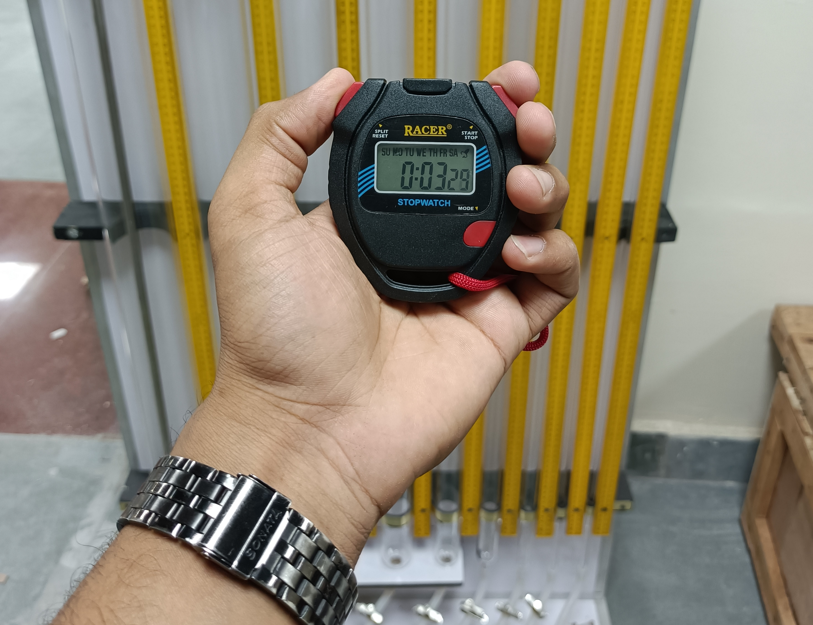
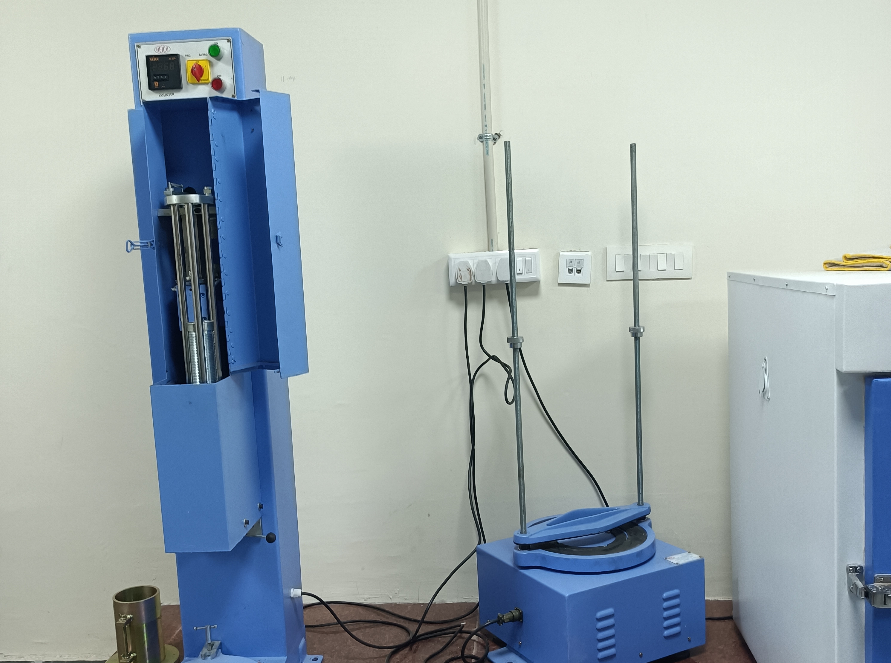
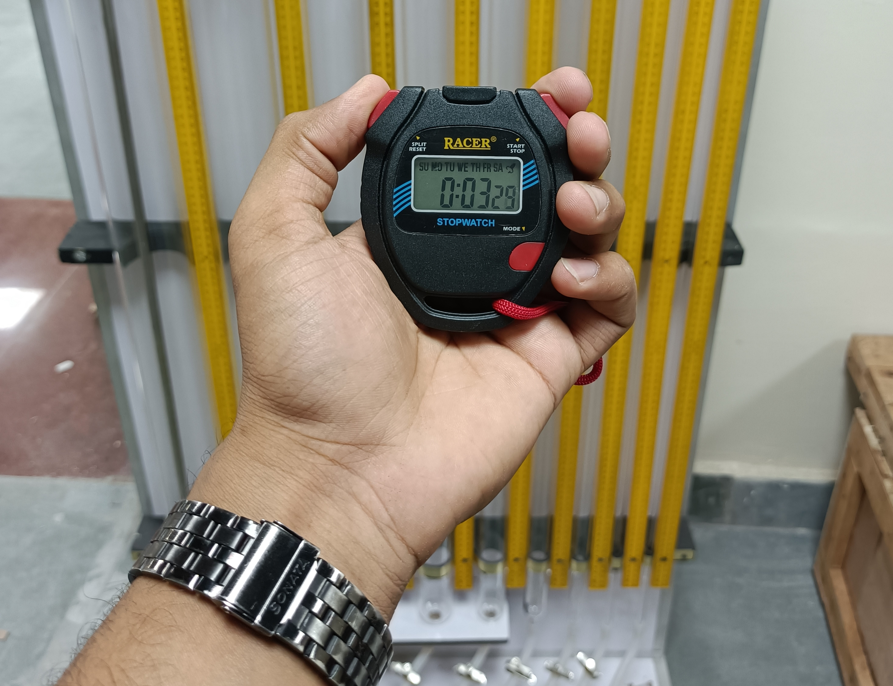
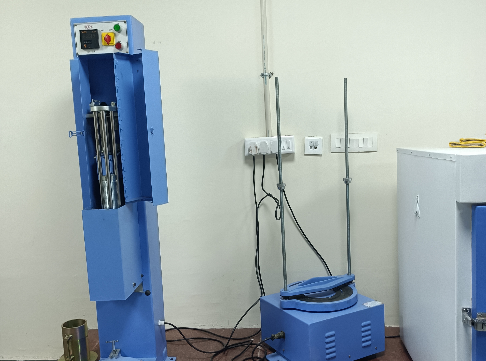

Any suggestion in Mind?
Contact nowPython is a computer programming language often used to build websites and software, automate tasks, and conduct data analysis. Python is a general-purpose language, meaning it can be used to create a variety of different programs and isn't specialized for any specific problems
HTML (HyperText Markup Language) is the code that is used to structure a web page and its content. For example, content could be structured within a set of paragraphs, a list of bulleted points, or using images and data tables.
Javascript is used by programmers across the world to create dynamic and interactive web content like applications and browsers. JavaScript is so popular that it's the most used programming language in the world, used as a client-side programming language by 97.0% of all websites.
It is a text-based way of representing JavaScript object literals, arrays, and scalar data. JSON is relatively easy to read and write, while also easy for software to parse and generate. It is often used for serializing structured data and exchanging it over a network, typically between a server and web applications.
Cascading Style Sheets (CSS) is a stylesheet language used to describe the presentation of a document written in HTML or XML (including XML dialects such as SVG, MathML or XHTML).
MySQL is an open source relational database management system. For WordPress sites, that means it helps you store all your blog posts, users, plugin information, etc. It stores that information in separate “tables” and connects it with “keys”, which is why it's relational